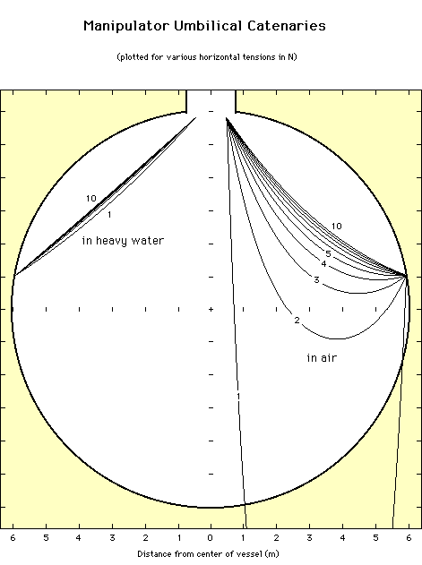

Calibration Manipulator
Software
Calibration Manipulator
Software
Umbilical Catenary Shape
The plot below shows the shape of the umbilical in heavy water and in air
for source positions at the side attachment points. Curves are given for
horizontal tensions ranging from 1 to 10 Newtons. Distances are in metres.
